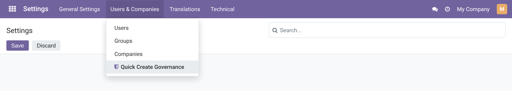
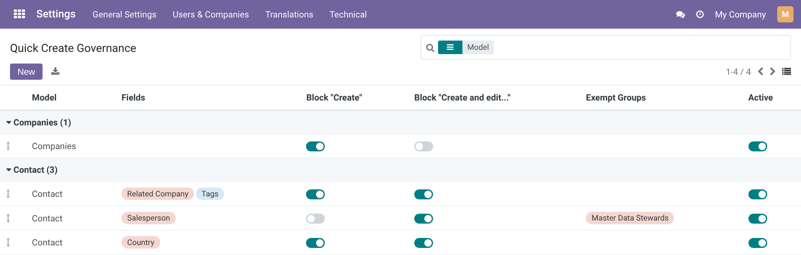
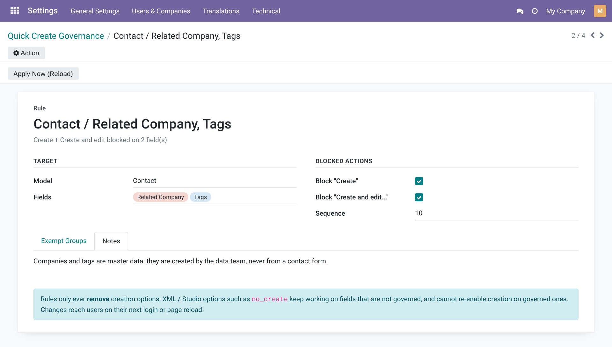
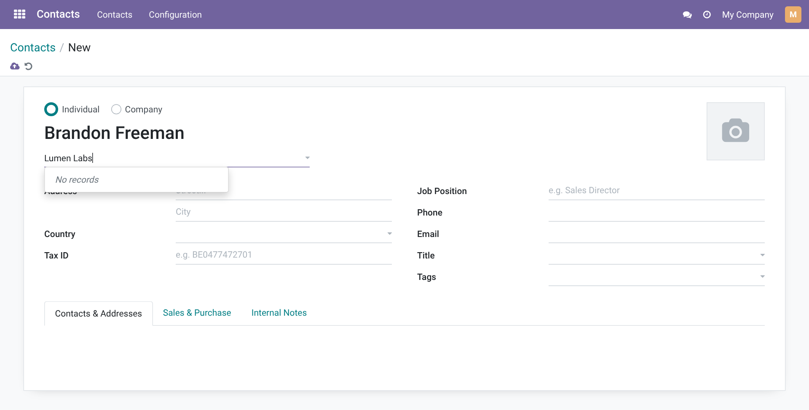
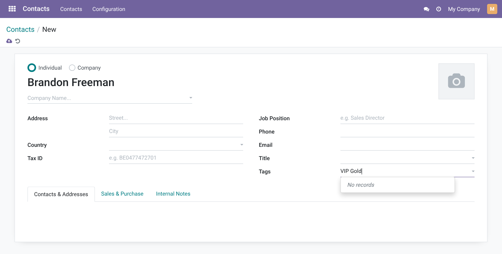
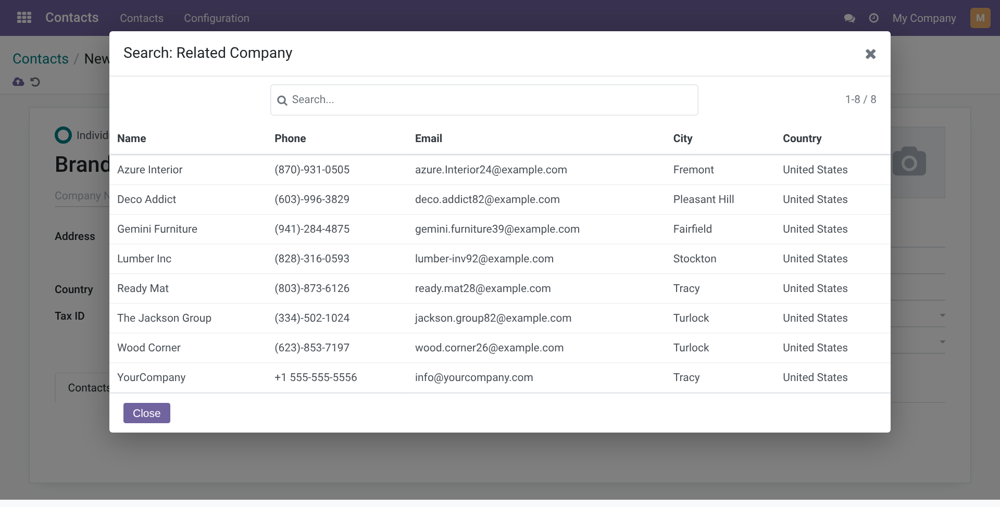
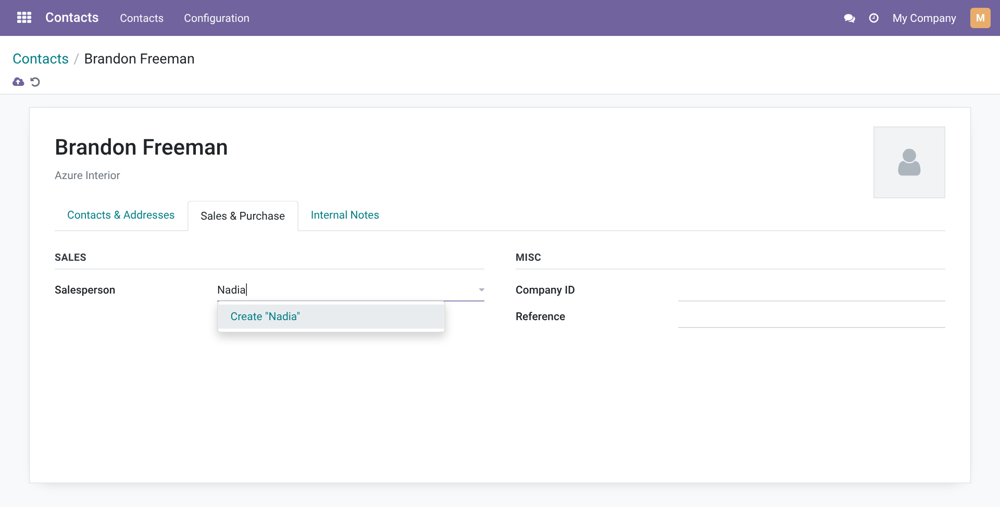
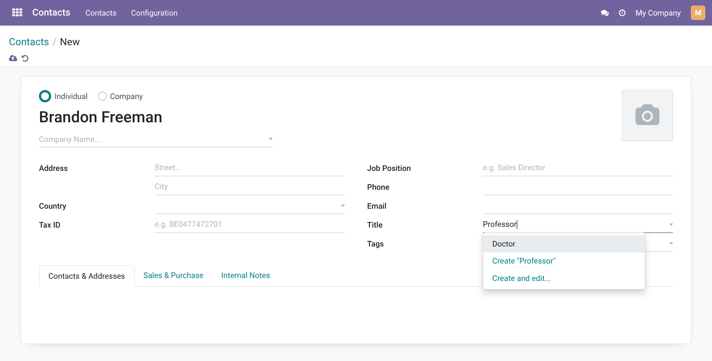
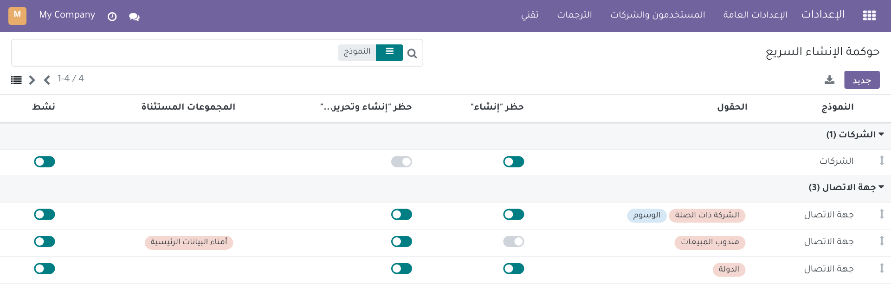

Administration · Master Data · Data Quality
Quick Create Governance
Decide from one screen where users may create records on the fly. Pick a model and its many2one / many2many fields, and the Create and Create and edit... options disappear from their dropdowns – no XML, no view inheritance, no Studio edits.
Odoo 16.0
Community & Enterprise
19 automated tests
English & العربية
Technical name: quick_create_governance
LGPL-3
1 screen
Every rule for every model, grouped by model
2 switches
Block Create, Create and edit..., or both
0 extra RPC
Rules travel with the session; dropdowns stay as fast as before
0 queries
Compiled rules are cached server-side per group set
Why this module
One typo in a dropdown and Odoo creates a duplicate company, tag or country. Standard Odoo can stop it, but only field by field, view by view.
In standard Odoo 16
- Blocking quick create means adding no_create / no_create_edit options in the XML of each view.
- The same field appears in many views (form, list, wizards, other apps); each needs its own inheritance.
- There is no central list of where creation on the fly is allowed or blocked.
- View options apply to everyone; a data steward cannot be allowed while others are blocked.
- Removing create rights on the target model blocks it everywhere, including its own menu.
- A later Studio edit or module update can silently re-enable creation.
With this module
- Rules are records: pick the Model and Fields, tick the actions to block. No code.
- A rule follows the field into every view of the model: form, editable list, kanban, dialogs.
- Settings › Users & Companies › Quick Create Governance lists all rules, grouped by model.
- Exempt Groups per rule let stewards keep creating while everyone else is blocked.
- Only inline creation is removed; the target model’s own menu and rights are untouched.
- Rules are applied after the view options, so XML or Studio cannot re-enable creation on a governed field.
How it works
Four steps, done once by an administrator.
1
Pick a model
The model whose screens host the field, e.g. Contact.
2
Choose fields
Any many2one / many2many fields, or leave empty for all of them.
3
Block actions
Tick Block "Create" and/or Block "Create and edit..."; add exempt groups if needed.
4
Users reload
Rules reach each user at login or page reload; Apply Now (Reload) refreshes your own client.
Features
Screenshots use the module’s demo data on a standard Odoo 16 database: three rules on Contact (Related Company + Tags, Salesperson, Country), one on Companies, and an archived rule on Bank Accounts.
Menus
One place for every rule
Settings › Users & Companies › Quick Create Governance, visible to the Administration / Settings group only.

Feature 1
See what is governed at a glance
The list is grouped by Model and shows Fields, both block switches, Exempt Groups and Active as toggles you can flip in place. Filters: Whole Model, With Exemptions, Archived. A rule with no field (here Companies) covers every relational field of the model.

Feature 2
A rule in three fields
The name is built automatically (Contact / Related Company, Tags) and a summary line spells out what is blocked. The Fields selector only offers many2one / many2many fields of the chosen model, and a rule must block at least one action. Use Notes to tell users which process to follow instead.

Feature 3
No more accidental records from a dropdown
On a governed field, typing a name that does not exist shows No records instead of Create "..." and Create and edit.... Existing records stay selectable as usual. The rule applies to the many2one widget and everything built on it (list and kanban many2one, avatar widgets, partner widgets).


The same rule on the Tags many2many field.
Feature 4
"Search More..." without a back door
When Block "Create and edit..." is on, the selection dialog opened from Search More... loses its New button: users can search and pick, not create. The same applies to the dialog behind Add a line on many2many lists.

Feature 5
Block only what you need
The Salesperson rule blocks only Create and edit...: a quick Create "Nadia" stays available, the full form does not. Members of Master Data Stewards are exempt and keep both options.

Feature 6
Everything else stays native
Fields without a rule, such as Title here, keep both standard options. Their own view options (no_create, no_create_edit, no_quick_create) keep working unchanged: the module only ever removes options.

Feature 7
Fully translated to Arabic
Menus, fields, help texts, views and error messages ship in Arabic (i18n/ar.po), with a .pot template for other languages. Right-to-left layouts work out of the box.

What each switch removes
Two independent switches per rule.
Block "Create" the Create "…" dropdown entry and the create confirmation
Block "Create and edit..." the Create and edit... entry and the New button of selection dialogs
No rule native Odoo behaviour, view options included
Rule: rules on the same field add up, the most restrictive wins. Example: a whole-model rule on Contact blocks Create, a second rule on Related Company blocks Create and edit... → Related Company loses both, every other contact field loses only Create.
Built for real-world corner cases
What happens when things are not the happy path.
XML says no_create: False
The rule is applied after view options are read, so a governed field stays blocked.
Studio-edited views
Enforcement lives in the field widgets, not in the view arch, so customised views are covered too.
Older (legacy) screens
Odoo 16 views not yet converted to OWL use the legacy many2one widget; it is governed by the same rules.
Only "Create and edit" blocked
Quick create stays, and the misleading "No records" line next to it is hidden.
One2many fields
Never touched: they cannot be selected in a rule, so adding lines works as before.
Uninstalled model or field
Rules on a deleted model are removed with it (cascade); dropped fields leave the rule automatically.
Multi-worker servers
Saving, archiving or deleting a rule clears the compiled cache on every worker.
Paused rules
Archive a rule (Active toggle) to suspend it without losing its settings.
Wrong field picked
Saving a rule with a field of another model, or a non-relational field, is refused with a clear message.
Scope: this is user-interface governance. Users who have create rights on the target model can still create from its own menu, by import or through the API. Use access rights and record rules when creation must be impossible everywhere.
Security
Who can do what.
| Who | Can |
|---|
| Administration / Settings | See the menu, create, edit, archive and delete rules |
| All other users | No access to rules; they only receive the restrictions that apply to them |
| Members of a rule’s Exempt Groups | Not affected by that rule (other rules still apply) |
| Multi-company | Rules are database-wide and apply in every company |
Technical details
For the people who install and maintain it.
| Odoo version | 16.0, Community and Enterprise |
| Depends on | base, web |
| Python dependency | None |
| Menus | Settings › Users & Companies › Quick Create Governance |
| Models | quick.create.rule; extends ir.http (session info) |
| Front end | Patches Many2OneField, Many2ManyTagsField, X2ManyField (many2many), Many2XAutocomplete and the legacy FieldMany2One |
| Performance | Rules compiled once per group set (ORM cache), shipped in session_info; per-field check is an in-memory lookup |
| Languages | English, Arabic (i18n/ar.po), .pot template included |
| Automated tests | 19: 16 unit tests (compilation, merging, exemptions, constraints, cache invalidation, zero-query warm cache) and 3 HTTP tests (session payload + 2 browser tours, including a latency budget) |
| License | LGPL-3 |